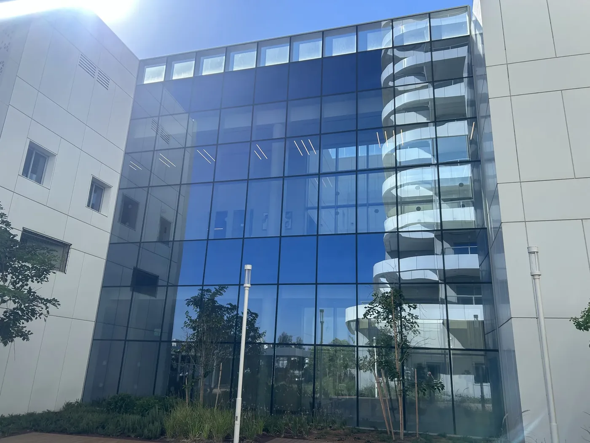

12 באוקטובר 2026
ניקוי ללא מגע ברחפן: איך מגיעים לתוצאה נקייה בלי לגעת בחזית
בלי מגב ובלי מגע: המים, הסבון ומסלול הטיסה עושים את העבודה. זה דורש מפעיל שמכיר את החומר, לא רק את הרחפן.
ניקוי ללא מגע מתאים לזכוכית ולחיפויים ששפשוף עלול לשרוט. הרחפן שומר מרחק קבוע, וההתזה מפרקת את הלכלוך לפני שהוא נשטף למטה.
התוצאה תלויה בשלושה דברים: איכות המים, סבון שנשטף עד הסוף, ומסלול שלא מדלג על פינות ועל קווי חלוקה. מפעיל מיומן רואה את ההבדל כבר במעבר הראשון.
לא כל כתם יורד בלי מגע. צבע, סיליקון ישן או משקע מינרלי עמוק מסומנים בנפרד, כדי שלא מבטיחים תוצאה שהשיטה לא יכולה לתת.